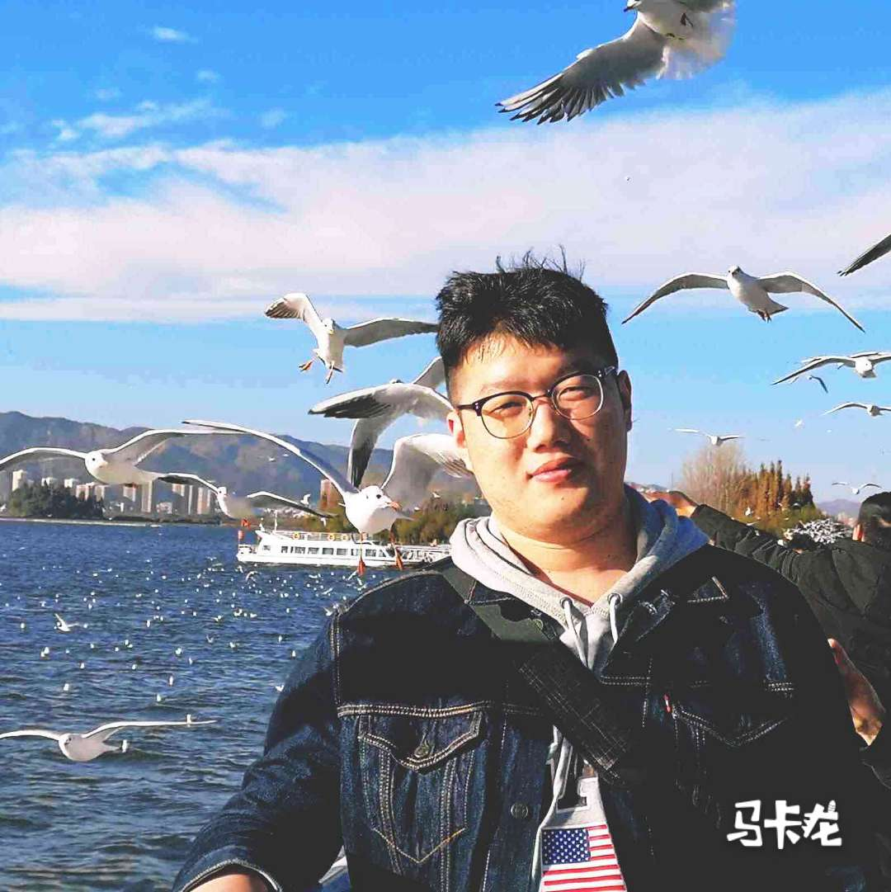
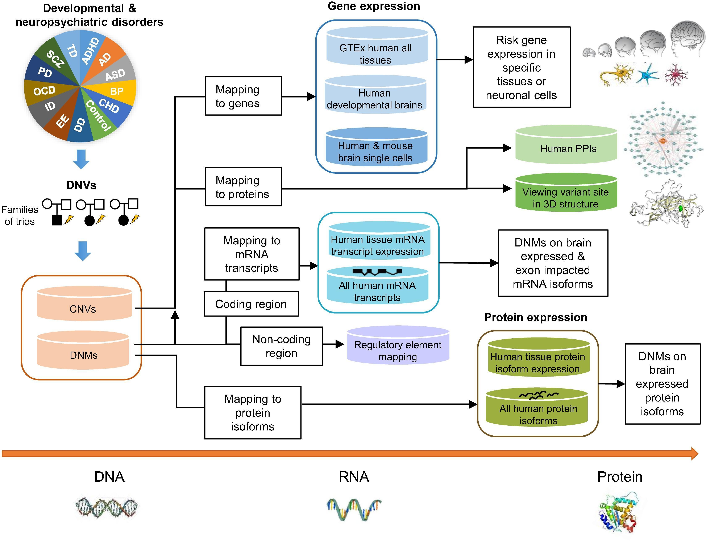

Sijia GuoEng.D candidate
Rm 201, Med-X Research Institute
|
 |


Biography
I am currently a first year doctoral student in the School of Biomedical Engineering, Shanghai Jiao Tong University, supervised by Prof. Cheng-Kung Cheng & Prof. Guan Ning Lin. Previously, I received my MS from Northeast Normal University in 2020, and BS from Jilin Normal University in 2017, both with a specialization in computer science.
Currently, my research interests include bioinformatics, machine learning and biomedical engineering in orthopedic.
Selected Publications [Google Scholar]
|  | PsyMuKB: An Integrative De Novo Variant Knowledge Base for Developmental Disorders. Guan Ning Lin#,*, Sijia Guo#, Xian Tan, Weidi Wang, Wei Qian, Weichen Song, Jingru Wang, Shunying Yu, Zhen Wang, Donghong Cui*, Han Wang*. Genomics, Proteomics & Bioinformatics (GPB), 2019. Version 2 (PsyMuKB-v2) is being planned and under development! |
Honors & Awards
| National scholarship for Postgraduates, 2019 |
| National scholarship for Postgraduates, 2018 |
Personal Skills
-
Web development:
Back-end: Flask, Django
Front-end: VUE, Bootstrap
Database: MongoDB, MySQL, Oracle
Others: Docker...
-
Data analysis and mining:
Programming: Python, R, SQL
Data Processing: data collection, preparation, and cleaning
Data Visualization: Echarts, Plotly
Data Analysis
Data Modeling: Machine learning(scikit-learn, Keras, Pytorch...)
© Sijia Guo | Last updated: May 2021